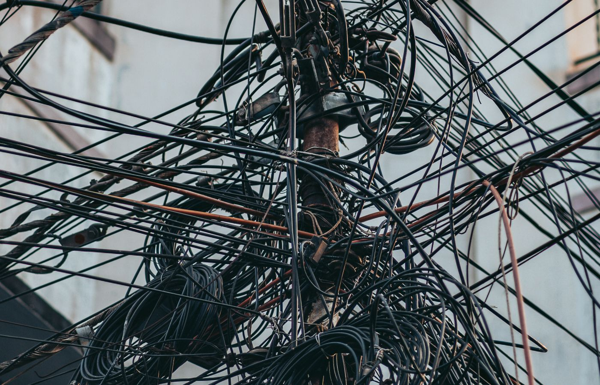
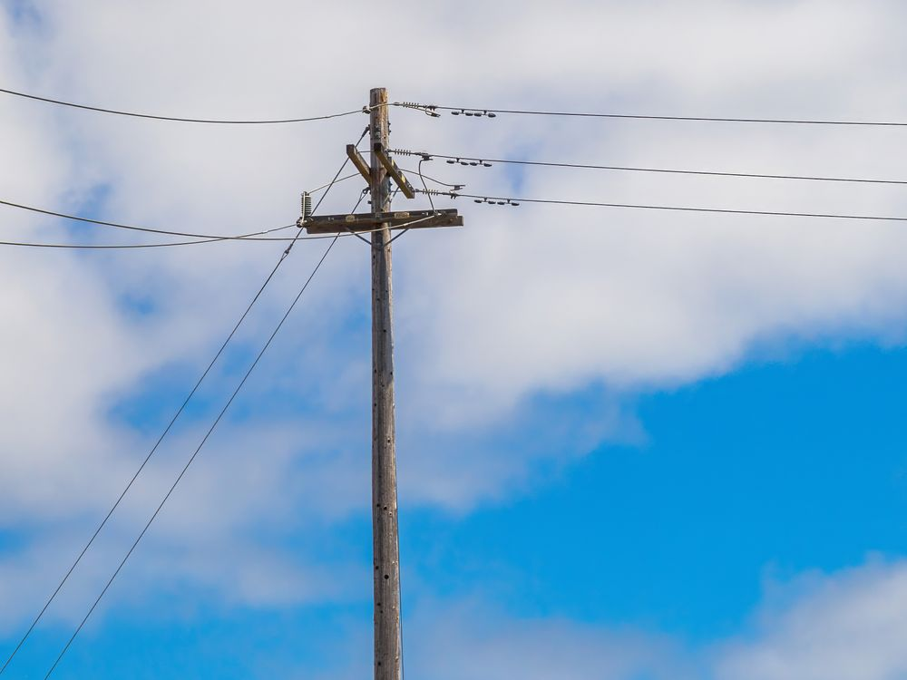
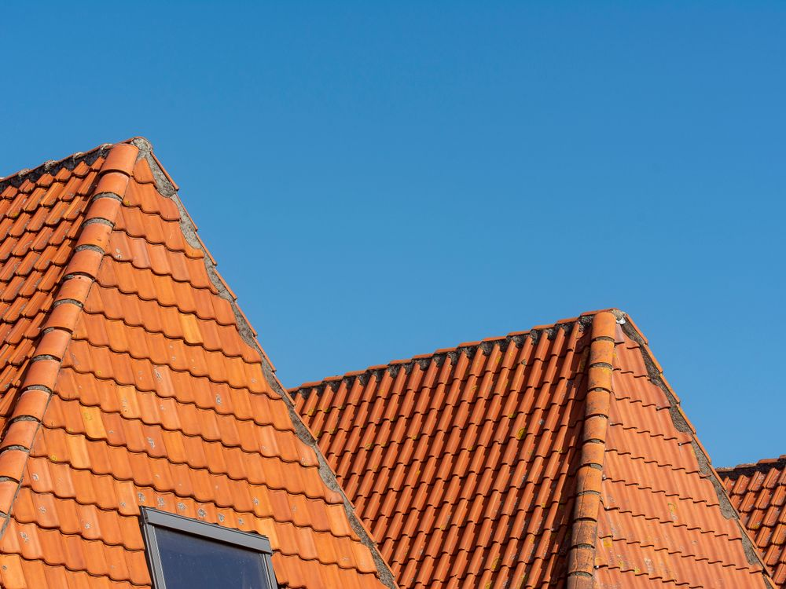
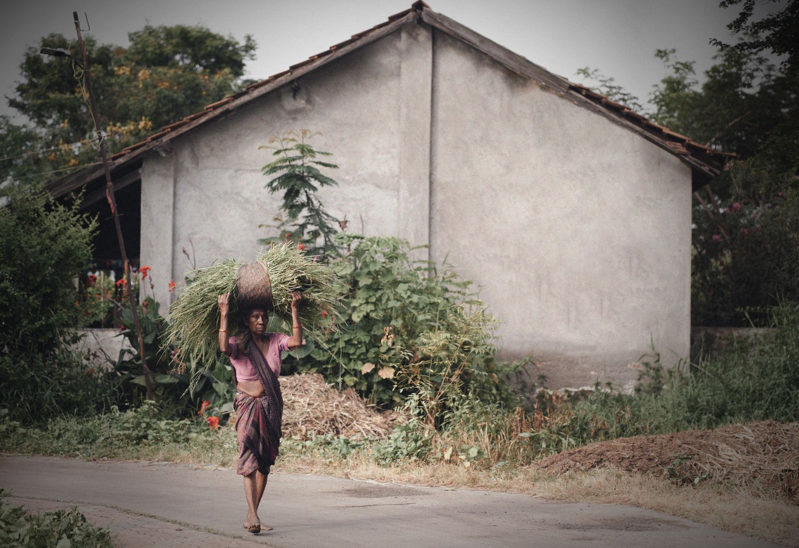
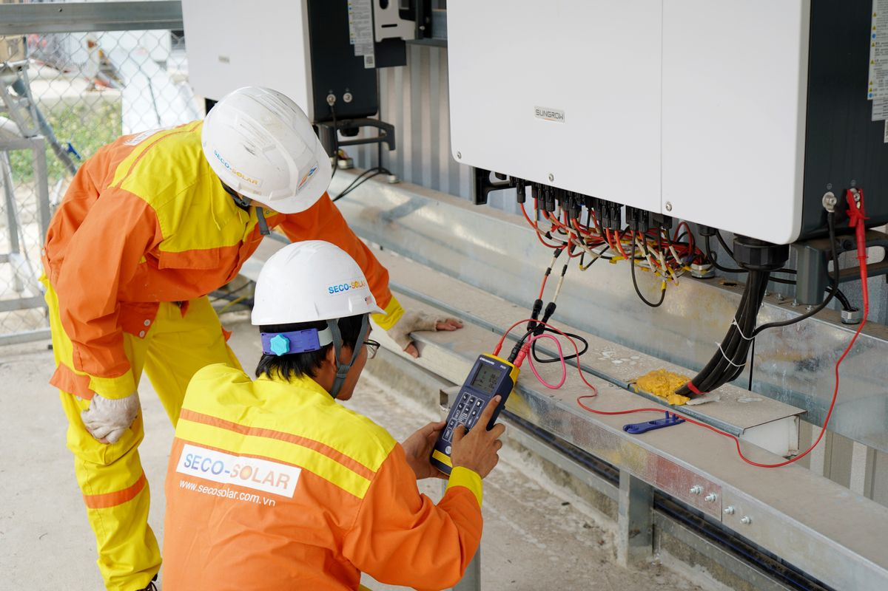

HALO Hemat Air dan Listrik Otomatis
Dua aliran masuk ke rumahmu.
HALO membaca keduanya per jam.
Listrik dan air dibaca sensor tiap lima belas menit, lalu kejanggalannya diteruskan ke pengelola kawasan dan teknisi sampai selesai diperbaiki.
WargaPengelola kawasanTeknisi
Dua puluh empat jam terakhir. Listrik ke atas, air ke bawah, satu sumbu jam di tengah.
-
0
rumah terpantau
di 8 kelurahan sekitar Ubud
-
0
kWh dihemat bulan ini
-
0
meter kubik air dihemat
-
0
sensor aktif
dilayani 27 teknisi mitra

Duduk perkaranya
Tagihan naik lebih dulu, penyebabnya ketahuan belakangan.
Meteran hanya memberi satu angka di akhir bulan. Ketika tagihan melonjak, tidak ada cara menelusuri jam berapa dan alat mana yang menyebabkannya. Kebocoran pipa bawah tanah bahkan bisa berjalan berbulan-bulan tanpa seorang pun menyadarinya.
Pemakaian listrik satu rumah contoh, dua belas bulan terakhir, dalam kWh. Penurunan mulai terlihat setelah rekomendasi HALO dijalankan.
Cara kerjanya
Empat pemeran, satu alur.
HALO bukan aplikasi yang berhenti di satu pengguna. Satu kejanggalan yang terbaca sensor akan berjalan melewati empat pihak sampai hasilnya kembali terukur di meteran yang sama.
Yang dilihat
Pemakaian listrik dan air per jam, kejanggalan yang ditandai beserta alasannya, dan perkiraan tagihan sampai akhir bulan.
Yang tidak bisa dilihat
Data rumah lain, termasuk tetangga sendiri. Angka pembanding yang muncul sudah dilucuti identitasnya.
Yang dilihat
Angka gabungan tiap kelurahan, peringkat antar wilayah, dan antrean pengajuan warga yang menunggu keputusan.
Yang tidak bisa dilihat
Pemakaian per jam milik rumah tertentu. Yang sampai ke sini hanya angka yang sudah digabung.
Yang dilihat
Pekerjaan yang sudah lolos verifikasi, alamatnya, dan temuan sensor yang menjadi dasar pengajuan itu.
Yang tidak bisa dilihat
Riwayat pemakaian rumah tersebut di luar temuan yang sedang dikerjakan.
Yang diukur
Selisih sebelum dan sesudah perbaikan, oleh sensor yang sama yang menemukan masalahnya. Bukan perkiraan, bukan klaim penyedia.
Ke mana angkanya pergi
Ke laporan pemilik rumah, dan sebagai angka gabungan ke rekap kawasan.
Layanan
Dari pemeriksaan sederhana sampai pemasangan besar.
Lihat dua belas layanan
Sensor listrik pintar Penjepit arus pada kotak MCB, mengirim pemakaian tiap lima belas menit. Hemat dibanding layanan terbesar Listrik Rp310.000 / bln
Panel surya atap 450 Wp Satu larik panel dengan inverter, memangkas tagihan siang hari secara langsung. Hemat dibanding layanan terbesar Audit Rp85.000 / bln
Audit energi rumah Seluruh titik listrik dan air ditelusuri, hasilnya daftar perbaikan berurut prioritas. Hemat dibanding layanan terbesarDampak
Satu kebocoran yang ditemukan, empat ribu liter yang tidak terbuang.
Bulan lalu HALO menandai aliran air yang bertahan pada 38 liter per jam antara pukul dua dan lima pagi di sebuah rumah di Peliatan. Empat hari kemudian teknisi menemukan sambungan pipa taman yang retak. Setelah ditambal, pemakaian dini hari turun menjadi empat liter per jam.
- 0rupiah dihemat pada tagihan berikutnya
- 0hari dari peringatan sampai perbaikan
Saya kira meterannya rusak. Ternyata bocor di bawah taman, dan sudah jalan entah berapa lama.
Pemilik rumah di Peliatan, Gianyar

Pola sepekan
Rumah paling boros Sabtu malam.
Tiap kotak satu jam. Makin pekat, makin besar pemakaian listriknya.
Sabtu pukul 19.00 jam paling padat di rumah contoh.
Skala
Kalau satu persen rumah tangga Indonesia ikut
0
ton CO₂e yang tidak jadi terlepas, tiap tahun
Delapan kelurahan hari ini. Modelnya tidak terikat tempat.
Yang dibutuhkan cuma tiga hal: sensor di meteran, satu pengelola kawasan yang mau memverifikasi, dan teknisi setempat. Ketiganya sudah ada di hampir semua daerah.
2.337 rumah
- Listrik dihemat41.628 kWh / bulan
- Air dihemat1.284 m³ / bulan
- Emisi dicegah442 ton CO₂e / tahun
710.000 rumah
- Listrik dihemat12,6 juta kWh / bulan
- Air dihemat4,7 juta m³ / tahun
- Emisi dicegah132.034 ton CO₂e / tahun
Dihitung dari rata-rata rumah yang sudah terhubung: 17,8 kWh dan 0,55 m³ per rumah tiap bulan, memakai faktor emisi jaringan Jawa-Bali 0,87 kg CO₂e per kWh.
Target pembangunan berkelanjutan yang dibantu
-
06
Air bersih dan sanitasi layak
Target 6.4 menyoal efisiensi pemakaian air. Kebocoran yang ketahuan dini adalah air bersih yang tidak jadi terbuang.
-
07
Energi bersih dan terjangkau
Target 7.3 meminta laju perbaikan efisiensi energi digandakan. Rumah tangga adalah bagian yang paling jarang diukur.
-
11
Kota dan permukiman berkelanjutan
Target 11.6 soal menekan dampak lingkungan kawasan. Data agregat kelurahan membuat program hemat bisa diarahkan ke wilayah yang paling boros.
-
13
Penanganan perubahan iklim
Setiap kilowatt jam yang tidak terpakai mengurangi beban pembangkit fosil. Selisihnya diukur sensor, bukan diperkirakan.
Mulai dari melihat rumah sendiri.
Masuk dengan akun demo, atau daftar untuk menghubungkan meteran rumahmu.